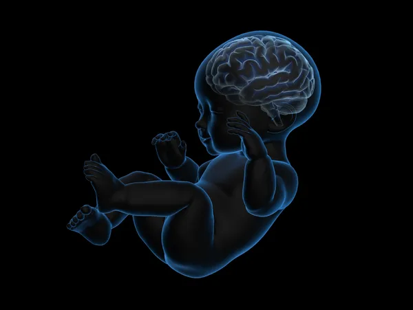
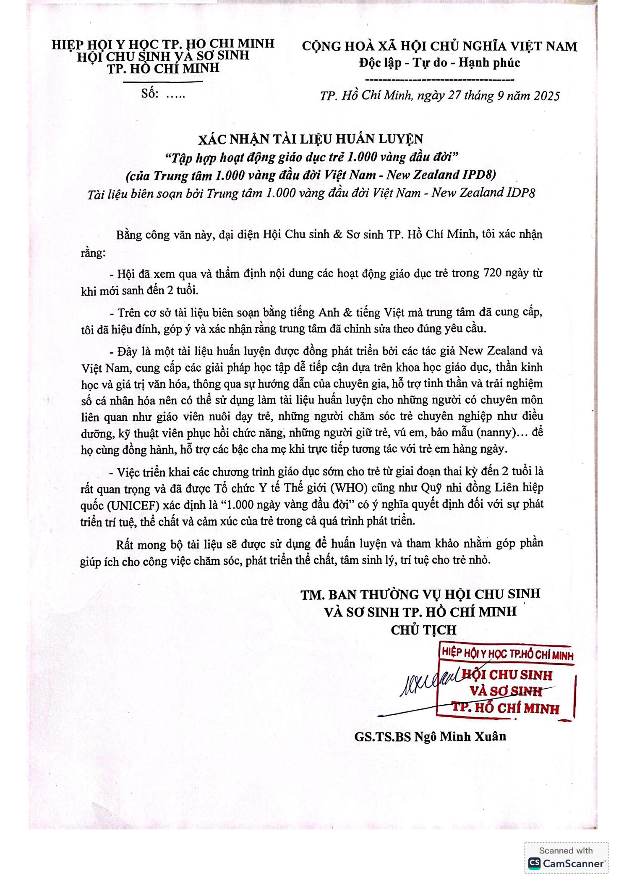

Não bộ phát triển mạnh mẽ nhất
Trong 1.000 ngày đầu, não bé phát triển đến 80% kích thước não người trưởng thành. Đây là nền tảng hình thành trí tuệ, khả năng học hỏi và cảm xúc sau này.

Thông tin Y Khoa
Giai đoạn vàng
1.000 ngày vàng là giai đoạn quyết định sự phát triển thể chất, trí tuệ và cảm xúc của trẻ, đóng vai trò then chốt trong việc hình thành nền tảng cho sự phát triển lâu dài.
Đây là thời kỳ duy nhất trong suốt cuộc đời mà não bộ và các chức năng sinh lý của trẻ có sự phát triển mạnh mẽ nhất. Nếu không được can thiệp hoặc đầu tư đúng cách, những cơ hội phát triển quan trọng sẽ không thể phục hồi hoàn toàn.
Việc đầu tư vào giai đoạn này là một quyết định khoa học và chiến lược, giúp trẻ phát triển toàn diện, vững chắc và tạo nền tảng cho sự thông minh, khỏe mạnh trong tương lai.

Vì sao 1.000 ngày vàng quan trọng?
Trong 1.000 ngày đầu, não bé phát triển đến 80% kích thước não người trưởng thành. Đây là nền tảng hình thành trí tuệ, khả năng học hỏi và cảm xúc sau này.
Những dưỡng chất mẹ hấp thu trong thai kỳ và cách nuôi dưỡng sau sinh ảnh hưởng trực tiếp đến khả năng miễn dịch của trẻ, giúp bé chống lại bệnh tật suốt đời.
Chế độ dinh dưỡng và chăm sóc trong giai đoạn này quyết định phần lớn đến chiều cao, xương và cơ bắp của bé trong tương lai.
Nghiên cứu cho thấy thiếu dinh dưỡng hoặc chăm sóc kém trong 1000 ngày vàng có thể làm tăng nguy cơ bé bị tiểu đường, tim mạch, béo phì khi trưởng thành.
Từ trong bụng mẹ, bé đã cảm nhận được tình yêu thương qua từng lời nói, từng cái vuốt ve. Sự chăm sóc đúng cách giúp hình thành mối liên kết cảm xúc bền chặt giữa mẹ và con.
Giấy chứng nhận

Trung tâm nghiên cứu và phát triển tiềm năng con người.

Quyết định bởi Viện trưởng Viện Nghiên cứu Giáo dục và Phát triển Tiềm năng Con người - IPD8.
Đào tạo chuyên môn liên ngành Y học - Giáo dục sớm trong 1000 ngày đầu đời.
Tài liệu chuyên môn liên ngành Y học - Giáo dục sớm trong 1000 ngày đầu đời.


Mỗi ngày đầu đời đều là một cơ hội phát triển không nên bỏ lỡ.